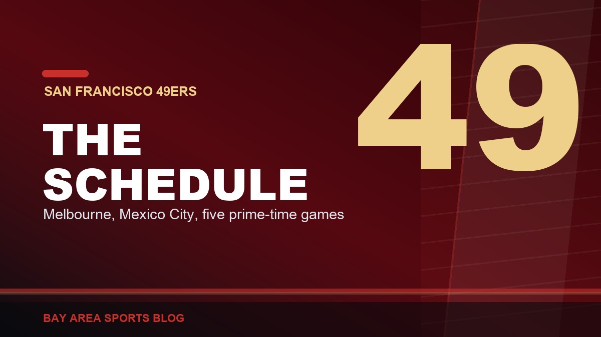
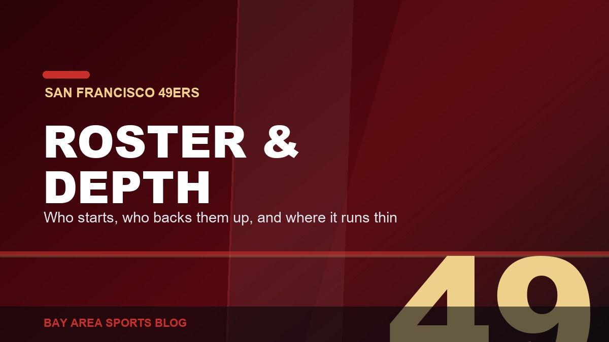

Latest Stories, page 4
Everything we have published, newest first. Opinion, recaps, history, and columns across every Bay Area team.

Andrew Luck Is Running a Football Program. It Is Working.
Stanford handed Andrew Luck a general manager job nobody else in college football has. Here is why the structure matters more than the name on it.

The NFL Is Opening the 49ers Season in Melbourne. Really.
The 49ers open 2026 against the Rams at the Melbourne Cricket Ground, the NFL's first regular season game in Australia. What that costs in Week 1.

The 2026 49ers: Roster, Schedule, and the Questions That Decide It
A structural preview of the 2026 49ers: the offense, the defence, the coaching, the schedule, and the four questions that actually decide the year.

The 2026 49ers Schedule, Week by Week
The 2026 49ers schedule with the structure that matters: the Melbourne opener, the Mexico City game, five prime-time slots, and our coverage of each week.

The 2026 49ers Roster and Depth Chart, Position by Position
A position-by-position look at the 2026 49ers roster: starters, key backups, the injury situation, and where the depth actually runs out.

Giants 5, Tigers 2: Devers Hit His 24th and Nobody Is Talking About the Year He Is Quietly Having
Two-run shot in the first, Adames went deep in the fifth, Jung Hoo Lee cleared the bases in the second. Devers has 24 homers, 27 doubles and 64 RBI and it has gone almost unmentioned.

Red Sox 13, A's 1: Fourteen Strikeouts, Two Hits, and a Ninth Straight Loss
Payton Tolle struck out 14 in six innings without a walk. Oakland had two hits all night. Boston had fifteen. The streak is nine and the record is 45-71.

Purdy Is Throwing 70-Yard Touchdowns to Guys You Have Never Heard Of, and It Is Getting Ridiculous
A pair of 70-yard scores, a deep touchdown to a receiver who signed less than 24 hours earlier, and 24-of-28 over two practices, with five receivers hurt.

Brock Purdy Is 147 Passes From Being the Most Efficient Quarterback in NFL History. Nobody Wants to Say It Out Loud.
A 104.0 career passer rating against an all-time record of 102.2, and he is 147 attempts, five games, from qualifying. The last pick in the draft is about to own the record book.

The Giants Got Marcelo Mayer for a Reliever Who Walks Everybody. Explain That One, Boston.
The fourth overall pick in 2021, twenty-three years old, five years of control, for Erik Miller, a middle reliever who walked sixteen percent of the hitters he faced. On paper this is a robbery.

They Finally Gave Brock Purdy a Fight. He Won It Going Away.
The most competitive practice of camp, picks, punch-outs, a defense that finally punched back, and Purdy went 12-of-17 on 32 team snaps throwing to guys signed off the street.

Rangers 6, Giants 0: Eleven Left On Base, Zero for Eight With Runners in Scoring Position
Shut out by a pitcher making his first start since September 2024. Eleven runners stranded. Nineteen games under .500 for the first time all season.

Reds 3, A's 2: Nine Strikeouts, 87 Pitches, and Kotsay Went to the Bullpen Anyway
Jacob Lopez had solved the Reds. He came out in a tie game. Two singles and a sacrifice fly later it was over. Seventh straight loss, 45-69.

Four Signings in a Week: Okoronkwo, Irwin, Deguara, Hodge, and a Roster Held Together With Tape
A Super Bowl edge rusher off a torn triceps, a Stanford kid coming home, a blocking tight end and a Pro Bowl gunner. Every move makes sense. Needing all four in August is the problem.

Brock Purdy Is Carving Up Training Camp. Twenty Guys Watched Him Do It From the Sideline.
13-of-14 in team drills, three straight red zone touchdowns and a Dougie in the end zone. On the same field, twenty players were unavailable. Both things are true.

The 49ers Signed KhaDarel Hodge, and That Tells You Everything About This Receiver Room
A 31-year-old Pro Bowl gunner with three catches last season and Raheem Morris ties. Fine player, no complaints. But it is August fifth and we are already signing bodies.

Rangers 5, Giants 4: Vitello Sat Eldridge, Eldridge Tied It Off the Bench, and They Lost Anyway
Bryce Eldridge never started, then tied the game with a pinch-hit two-run single in the ninth. Ezequiel Duran's second double of the night dropped on the warning track and Texas walked it off. 48-66.

Heliot Ramos Is a Yankee: The Rest of the Selloff We Have Not Talked About
Ramos to New York for two prospects, Erik Miller to Boston for Marcelo Mayer, Mahle to Atlanta. Five trades in a day, and we shipped the one player we actually developed.

Reds 5, A's 4: They Led in the Eighth and Lost on Wild Pitches. Plural.
The tying run and the winning run both scored without Cincinnati putting a ball in play. J.T. Ginn's six-inning return from the blister, wasted. 45-68, and 0-5 since the deadline weekend began.

The 49ers Love Raheem Morris, and It Is Because He Lets Them Play Football
Five-down looks, new coverages, Warner and Greenlaw yelling at each other again, and a coordinator who tells this defense to go play instead of go think. It is the one good thing at this camp.

Purdy Is Ripping It in Camp, and That Throw to Demarcus Robinson Was a Dime
Over two defenders, back of the end zone, dropped in a bucket. Brock is playing fast and free again, and D-Rob has been the quiet best story of camp. Now just stay healthy.

Robbie Ray to the Padres: Of Course It Is the Padres
Nothing is official yet, but the word is out. A Cy Young winner on an expiring deal, headed to the team that just swept us out of Petco. I asked for the teardown. It still stings.

Arraez Is Gone: The Best Hitter We Had Is a Phillie Now
Arraez and Kilian to Philadelphia for Ramon Marquez and Marty Gair. The National League batting leader, the only at-bat in this lineup I trusted, is on a plane east.

It Is August and the 49ers Are Already Hurt. Again.
Pearsall out for the year, Kittle and Mykel Williams on PUP, four receivers off the field on the same day, and half a defensive line on the report. Nobody has played a snap yet.

Padres 5, Giants 4: Swept in San Diego, and the Deadline Is Tomorrow
Landen Roupp walked four in a four-run second, the Giants cut it to one three separate times and never got even, and San Francisco left Petco Park 0-3. They are 47-65 and 21-37 on the road.

Tigers 11, A's 0: Swept, Shut Out, and Outscored 32-7 in Three Days
Gage Jump walked six and did not finish the fourth, Detroit added four in the eighth, and a position player pitched the ninth. Five straight losses, 45-67, and a weekend they were outscored 32-7.

Monday's Deadline Is the Only Interesting Thing Left About This Season
Forty-seven and sixty-four. Ramos on the block, Lee reportedly staying, Arraez and Ray on expiring deals. If Posey does not tear it down Monday, he never will.

Tony Vitello Has No Idea What He Is Doing With This Lineup, and Bryce Eldridge Batting Leadoff Is the Proof
Sixty different batting orders in seventy-seven games. Eight different leadoff hitters. And now the 21-year-old middle-of-the-order bat is hitting first. This is why they never get in a groove.

Padres 6, Giants 5: Basabe Tied It Off a 103-MPH Fastball, and the Ninth Threw It Away
A guy playing his third game of the season drove in four, the Giants tied it in the eighth against a man throwing 103, and then gave it right back. 47-64, and 21-36 on the road.

Ricky Pearsall Is Out for the Year, and This Kid Just Cannot Catch a Break
Season-ending IR, PCL surgery coming, and a six-to-12-month road back. Pearsall still has not gotten one clean, healthy run at his career.

Padres 7, Giants 0: Two Hits. Two. That Is the Whole Night.
Carson Whisenhunt could not get out of the fourth and the lineup managed two hits in nine innings. The good feeling from Thursday lasted exactly a day.

Kyle Shanahan Update: He's Turning the Corner, and Camp Is Feeling It
Pads are on, and the coach is closer to being fully back in the middle of it, less than three weeks removed from a serious car accident.

Dre Greenlaw Hit Too Hard on Day One of Pads, and Christian McCaffrey Still Calls Him His Favorite Player
Greenlaw came out flying on the first padded practice of camp, and McCaffrey wasn't thrilled to be on the wrong end of it. He's also said Greenlaw is his favorite player in the league.

De'Zhaun Stribling Keeps Balling Out in Camp, and a Starting Job Is Starting to Look Inevitable
The rookie wide receiver isn't flashing for a day anymore, he's stacking good day after good day with Brock Purdy.

Deebo Samuel Is Coming Home: 49ers Bring Him Back on a One-Year, $7 Million Deal
A low-risk, high-reward reunion. Seven million dollars buys back one of the most uniquely dangerous weapons Kyle Shanahan's offense has ever had.

The Giants Are Playing Their Best Baseball of the Season, and the Brewers Series Just Proved It
3-2 over the last five games, with two wins over the MLB-best Brewers including a 16-3 rout. This is the best the Giants have looked all year.

The A's Free Fall Never Actually Stopped: 45-63, Fourth Place, and a Trade Deadline That Can't Come Soon Enough
Nine losses in a row was supposed to be the bottom. Instead the A's have gone 4-8 since, sitting 18 games under .500 with Monday's trade deadline arriving right on schedule.

How Steve Kerr Actually Handled Jonathan Kuminga
It was never as clean as "buried him" or "stood by him." A season-long negotiation between a coach who needed wins and a young forward who needed minutes.

Giants 16, Brewers 3: The Offense Finally Erupted, and It Was Glorious
Seventeen hits, a seven-run sixth, and Daniel Susac's first two career homers bury the MLB-best Brewers. Giants take the series and improve to 46-62.

Red Sox 4, Athletics 2 (10): Jacob Lopez Deals, the Offense Sleeps, Extras Bite Again
Lopez strikes out eight, Heim and Butler homer, and Monasterio's two-run shot in the tenth ends it. A's fall to 45-63.